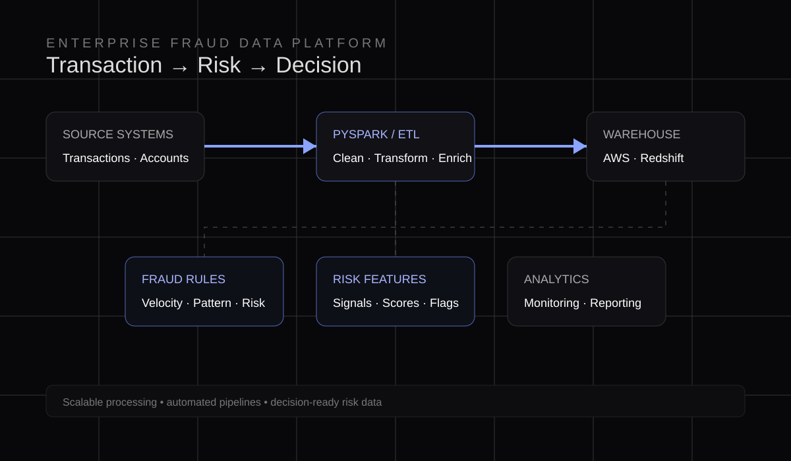

01 / BFSI
Enterprise Fraud
Data Platform.
Scalable fraud analytics and ETL workflows for banking data, built around automated processing and reliable analytical outputs.

The system
From raw banking data to risk intelligence.
The platform organizes source data through transformation and analytical stages so fraud-focused use cases can work from consistent, decision-ready data.
ETLAutomated workflows
PySparkScalable processing
AWSCloud data services
Stack & focus
SQLTransformation and analytical querying
PythonProcessing and automation
PySparkDistributed data processing
RedshiftAnalytical warehouse
AWSCloud platform
FraudRisk-focused analytics